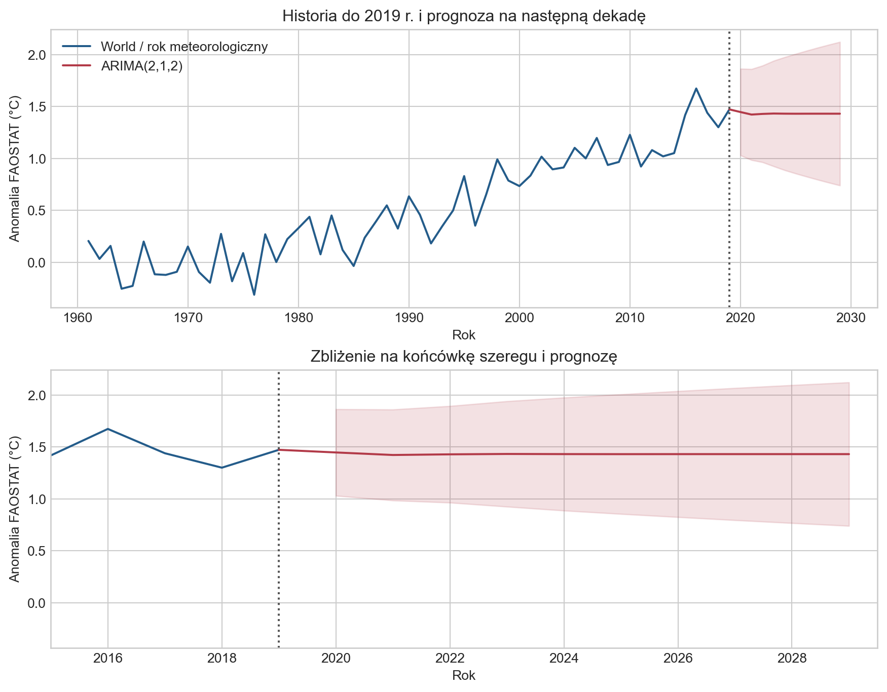
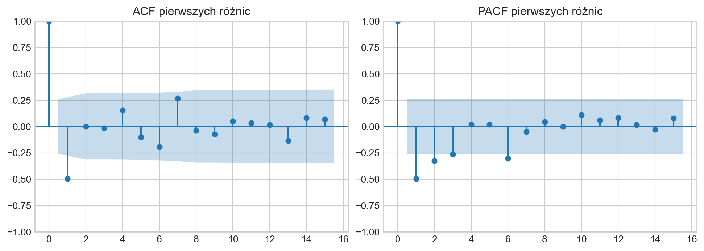
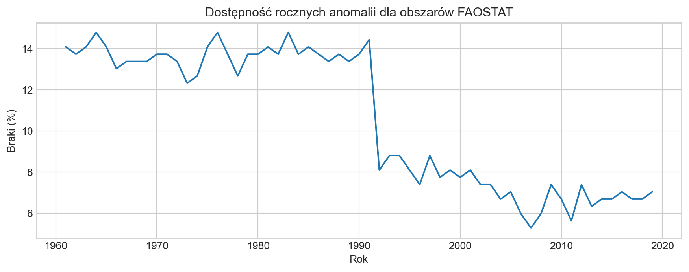
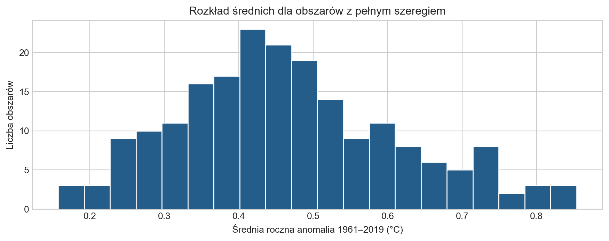
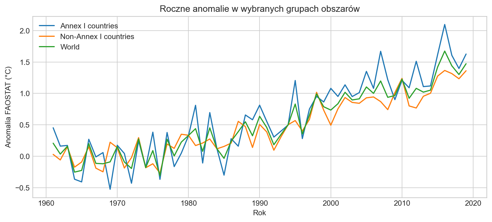

Temperatura nad lądami: analiza FAOSTAT i prognoza ARIMA
Roczne anomalie 1961–2019 i prognoza statystyczna na lata 2020–2029
Autor
StoryLab
Opublikowano
29 września 2024
Zmodyfikowano
23 września 2026
1 Cel analizy
Jak zmieniała się roczna temperatura powietrza nad lądami i co na podstawie tej historii przewiduje ARIMA? Śledzimy anomalie temperatury w latach 1961–2019, a następnie wykorzystujemy ten sam szereg do utworzenia prognozy na lata 2020–2029.
Porównanie głównych regionów FAOSTAT uzupełnia tę historię: pokazuje przestrzenne różnice tempa zmian.
Anomalia to odchylenie temperatury od średniej z okresu referencyjnego 1951–1980. Dodatnia wartość oznacza temperaturę wyższą od tej średniej. Analiza dotyczy temperatury powietrza nad lądami.
2 Dane FAOSTAT: co mierzymy?
FAOSTAT to baza statystyczna Organizacji Narodów Zjednoczonych ds. Wyżywienia i Rolnictwa (FAO). Korzystamy z lokalnego eksportu Environment_Temperature_change_E_All_Data_NOFLAG.csv, zachowanego z pierwotnej analizy pakietu Temperature Change. Plik obejmuje lata 1961–2019 oraz państwa, terytoria, regiony i inne agregaty geograficzne.
Kolumna
Znaczenie
Przykłady wartości
Area
Obszar, którego dotyczą dane
Poland, Europe, World
Element
Rodzaj wielkości
Temperature change, Standard Deviation
Months
Okres w obrębie roku
January, Meteorological year oraz sezony
Y1961–Y2019
Wartości dla kolejnych lat
Liczbowe wartości opisane przez trzy powyższe pola
Temperature change oznacza analizowaną anomalię temperatury. Standard Deviation opisuje odchylenie standardowe okresu referencyjnego i jest osobnym elementem danych. Nazwa Months obejmuje zarówno miesiące, jak i sezony oraz rok meteorologiczny.
Analizę prowadzimy na częstotliwości rocznej, ponieważ interesują nas długookresowe zmiany temperatury i prognoza kolejnych lat. Dane miesięczne są dostępne w źródle, ale odpowiadają na bardziej szczegółowe pytanie i wymagałyby osobnego modelowania dynamiki wewnątrz roku.
Kod
from pathlib import Pathimport warningsimport numpy as npimport pandas as pdimport matplotlib.pyplot as pltfrom IPython.display import display, Markdownfrom statsmodels.tsa.arima.model import ARIMAfrom statsmodels.graphics.tsaplots import plot_acf, plot_pacfplt.style.use('seaborn-v0_8-whitegrid')source_path = Path('../data/Environment_Temperature_change_E_All_Data_NOFLAG.csv')all_data = pd.read_csv(source_path, encoding='latin-1')year_cols =sorted([c for c in all_data if c.startswith('Y') and c[1:].isdigit()], key=lambda c: int(c[1:]))years = np.array([int(c[1:]) for c in year_cols])assert np.array_equal(years, np.arange(1961, 2020))def table(frame): display(frame.style.format(precision=3).hide(axis='index'))def pl(value):returnf'{value:.3f}'.replace('.', ',')
Poniżej pokazujemy osiem rzeczywistych wierszy i trzy wybrane kolumny roczne. Przykłady obejmują różne obszary, okresy i oba rodzaje wielkości; pomagają odczytać strukturę pliku.
Do analizy zmian w czasie potrzebujemy jednej obserwacji dla każdego roku. Z danych FAOSTAT wybieramy więc roczną zmianę temperatury dla obszaru World: Area = World, Element = Temperature change oraz Months = Meteorological year.
World jest agregatem dostarczonym bezpośrednio przez FAOSTAT, dlatego nie wyznaczamy wartości światowej przez uśrednianie krajów lub regionów. W wybranym wierszu kolejne kolumny Y1961–Y2019 tworzą 59-letni szereg, który wykorzystujemy dalej do opisu zmian temperatury i prognozy.
Kod
world_row = all_data.loc[ all_data['Area'].eq('World')& all_data['Element'].eq('Temperature change')& all_data['Months'].eq('Meteorological year')]assertlen(world_row) ==1, 'Oczekiwano dokładnie jednego wiersza World'world_values = world_row.iloc[0][year_cols].to_numpy(dtype=float)assert np.isfinite(world_values).all(), 'Szereg World zawiera braki lub nieskończone wartości'world = pd.DataFrame({'year': years, 'anomaly': world_values})ts_world = pd.Series(world_values, index=pd.period_range('1961', periods=len(years), freq='Y'), name='World')table(pd.DataFrame({'Seria': ['World / Meteorological year'], 'Liczba lat': [len(ts_world)],'Zakres': [f'{years[0]}–{years[-1]}'],'Braki': [int(ts_world.isna().sum())], 'Wartość 2019 (°C)': [ts_world.iloc[-1]]}))
Seria
Liczba lat
Zakres
Braki
Wartość 2019 (°C)
World / Meteorological year
59
1961–2019
0
1.473
Otrzymujemy kompletny szereg 59 rocznych obserwacji z lat 1961–2019. Najpierw sprawdźmy, co mówi o zmianach temperatury w czasie.
4 Jak zmieniała się temperatura w latach 1961–2019?
Rysunek 1: Roczna anomalia World w oryginalnej skali FAOSTAT. Prosta jest opisem historii, nie prognozą ARIMA.
Kod
display(Markdown(f'**W latach 1961–2019 roczna anomalia temperatury nad lądami rosła.** 'f'Dopasowany trend liniowy wynosi **{pl(slope*10)}°C na dekadę**. 'f'Minimum odnotowano w **{world.loc[world.anomaly.idxmin(), "year"]} r. 'f'({pl(ts_world.min())}°C)**, a maksimum w **{world.loc[world.anomaly.idxmax(), "year"]} r. 'f'({pl(ts_world.max())}°C)**. 'f'W całym okresie średnia anomalia wyniosła **{pl(ts_world.mean())}°C**, 'f'a mediana **{pl(ts_world.median())}°C**.'))
W latach 1961–2019 roczna anomalia temperatury nad lądami rosła. Dopasowany trend liniowy wynosi 0,275°C na dekadę. Minimum odnotowano w 1976 r. (-0,311°C), a maksimum w 2016 r. (1,674°C). W całym okresie średnia anomalia wyniosła 0,524°C, a mediana 0,439°C.
Średnia opisuje poziom anomalii w całym okresie, a trend — kierunek i tempo zmian. Szczegółowe statystyki znajdują się w dodatku.
4.1 Czy wzrost był podobny we wszystkich regionach?
Szereg światowy pokazuje ogólny kierunek zmian, ale ukrywa różnice przestrzenne. Porównujemy więc gotowe agregaty FAOSTAT dla Afryki, obu Ameryk, Azji, Europy i Oceanii, z World jako punktem odniesienia. Każda z sześciu serii obejmuje komplet 59 rocznych obserwacji; sprawdzamy to w kodzie.
regional_only = region_stats.loc[region_stats.Region.ne('World')]fastest, slowest = regional_only.iloc[0], regional_only.iloc[-1]display(Markdown(f'Wśród pięciu porównywanych regionów najwyższy liniowy trend ma **{fastest.Region}** 'f'(**{pl(fastest["Trend (°C/dekadę)"])}°C/dekadę**), a najniższy **{slowest.Region}** 'f'(**{pl(slowest["Trend (°C/dekadę)"])}°C/dekadę**). ''Porównanie opisuje tempo zmian w tym okresie; samo nie wyjaśnia ich przyczyn.'))
Wśród pięciu porównywanych regionów najwyższy liniowy trend ma Europe (0,372°C/dekadę), a najniższy Oceania (0,194°C/dekadę). Porównanie opisuje tempo zmian w tym okresie; samo nie wyjaśnia ich przyczyn.
Historia pokazuje wzrost rocznej anomalii, którego tempo różni się między regionami. Wracamy teraz do szeregu World: czy model oparty na jego dotychczasowej dynamice przedłuży ten wzrost w prognozie?
5 Co prognozuje ARIMA na lata 2020–2029?
Model otrzymuje wyłącznie 59 rocznych obserwacji World z lat 1961–2019. Używamy ARIMA(2,1,2) bez deterministycznego trendu, zachowując specyfikację eksperymentu. Nie twierdzimy, że jest to optymalny model: nie przeprowadzamy tu selekcji ani testu trafności na późniejszych obserwacjach.
Kod
with warnings.catch_warnings(record=True) as estimation_warnings: warnings.simplefilter('always') model_fit = ARIMA(ts_world, order=(2, 1, 2), trend='n').fit()assert model_fit.mle_retvals.get('converged', False), 'Estymacja ARIMA nie osiągnęła zbieżności'prediction = model_fit.get_forecast(steps=10)interval = prediction.conf_int(alpha=.05).to_numpy()forecast = pd.DataFrame({'Rok':np.arange(2020, 2030), 'Prognoza (°C)':prediction.predicted_mean.to_numpy(),'Dolna granica 95%':interval[:,0], 'Górna granica 95%':interval[:,1]})assert np.isfinite(forecast.to_numpy()).all()
Kod
fig, axes = plt.subplots(2, 1, figsize=(9, 7), layout='constrained')for ax in axes: ax.plot(years, world_values, color='#245c8a', label='World / rok meteorologiczny') ax.plot(np.r_[2019, forecast.Rok], np.r_[world_values[-1], forecast['Prognoza (°C)']], color='#b23a48', label='ARIMA(2,1,2)') ax.fill_between(forecast.Rok, forecast['Dolna granica 95%'], forecast['Górna granica 95%'], color='#b23a48', alpha=.15) ax.axvline(2019, color='#555', linestyle=':') ax.set(xlabel='Rok', ylabel='Anomalia FAOSTAT (°C)')axes[0].set_title('Historia do 2019 r. i prognoza na następną dekadę')axes[0].legend()axes[1].set(xlim=(2015, 2029.5), title='Zbliżenie na końcówkę szeregu i prognozę')plt.show()

Rysunek 2: Prognoza rocznej anomalii World w skali FAOSTAT. Pasmo oznacza modelowy przedział predykcji 95%.
Mimo wzrostu widocznego w historii prognoza punktowa ARIMA stopniowo się wypłaszcza. Po krótkich wahaniach model zbliża się do stałego poziomu.
Kod
display(Markdown(f'Prognoza na **2020 r. wynosi {pl(forecast.iloc[0]["Prognoza (°C)"])}°C**, 'f'a na **2029 r. {pl(forecast.iloc[-1]["Prognoza (°C)"])}°C**. 'f'Wartości punktowe w całym horyzoncie mieszczą się między 'f'**{pl(forecast["Prognoza (°C)"].min())}°C a {pl(forecast["Prognoza (°C)"].max())}°C**. 'f'Po krótkich wahaniach model zbliża się do poziomu około **{pl(forecast.iloc[-1]["Prognoza (°C)"])}°C**. 'f'Przedział predykcji 95% dla 2029 r. wynosi 'f'**{pl(forecast.iloc[-1]["Dolna granica 95%"])}–{pl(forecast.iloc[-1]["Górna granica 95%"])}°C**.'))
Prognoza na 2020 r. wynosi 1,447°C, a na 2029 r. 1,431°C. Wartości punktowe w całym horyzoncie mieszczą się między 1,423°C a 1,447°C. Po krótkich wahaniach model zbliża się do poziomu około 1,431°C. Przedział predykcji 95% dla 2029 r. wynosi 0,741–2,122°C.
Wypłaszczenie wynika ze specyfikacji ARIMA(2,1,2) bez drift, która nie przedłuża automatycznie historycznego trendu liniowego. Nie oznacza przewidywanego zatrzymania ocieplenia. Model korzysta wyłącznie z przeszłości jednej serii i nie opisuje fizycznych przyczyn zmian klimatu.
Pasmo na wykresie pokazuje niepewność prognozy warunkową względem założeń ARIMA. Nie obejmuje pełnej niepewności procesów klimatycznych ani wyboru modelu. Wraz z horyzontem prognozy przedział się rozszerza.
AdnotacjaSzczegóły prognozy i diagnostyka techniczna
Kod
table(forecast)for message insorted({str(w.message) for w in estimation_warnings}):print('Diagnostyka estymacji:', message)print(model_fit.summary())
ACF i PACF pokazujemy dla pierwszych różnic szeregu, zgodnie ze składnikiem d=1. To diagnostyka opisowa, a nie dowód optymalności przyjętych parametrów.
Kod
fig, axes = plt.subplots(1, 2, figsize=(10, 3.5), layout='constrained')plot_acf(ts_world.diff().dropna(), lags=15, ax=axes[0], title='ACF pierwszych różnic')plot_pacf(ts_world.diff().dropna(), lags=15, method='ywm', ax=axes[1], title='PACF pierwszych różnic')plt.show()

6 Wnioski i następny krok
Roczna anomalia temperatury nad lądami rosła w latach 1961–2019. Porównanie głównych regionów pokazuje przestrzenne zróżnicowanie tempa zmian. ARIMA bez drift, dopasowana do szeregu światowego, daje jednak prognozę zbliżającą się do stałego poziomu. Wyraźny trend historyczny nie wystarcza więc, aby dowolny model go przedłużył.
Mamy prognozę na lata 2020–2029 i sześć późniejszych obserwacji FAOSTAT z lat 2020–2025, których model nie otrzymał podczas treningu. To pozwala przejść od opisu zachowania modelu do oceny jego błędów. W raporcie „Prognoza kontra rzeczywistość” porównujemy prognozę z tymi wartościami i sprawdzamy rewizje między wydaniami danych. Osobny test na ERA5 zestawia ARIMA z prostymi metodami.
AdnotacjaAnalizy dodatkowe: statystyki, kompletność obszarów i grupy Annex I
Poniższe wyniki uzupełniają eksplorację zbioru. Główna prognoza wykorzystuje wyłącznie wybrany wcześniej szereg World.
Odchylenie standardowe obejmuje trend i wahania między latami; nie jest miarą samej krótkookresowej zmienności ani niepewności pomiaru.
Zróżnicowanie obszarów w danych rocznych
Przechodzimy od szeregu światowego do porównania obszarów. Teraz wybieramy roczne anomalie dla wszystkich wartości Area i sprawdzamy ich dostępność. Część tych szeregów ma braki, dlatego porównanie średnich z całego okresu wymaga wyboru obszarów z kompletem 59 obserwacji.
Kod
annual = all_data.loc[ all_data['Element'].eq('Temperature change')& all_data['Months'].eq('Meteorological year')].copy()assertnot annual.duplicated(['Area']).any(), 'Więcej niż jeden roczny wiersz dla obszaru'quality = pd.DataFrame({'Kontrola': ['Wiersze surowego pliku', 'Kolumny surowego pliku', 'Pełne duplikaty','Obszary w danych rocznych', 'Liczba lat', 'Braki w danych rocznych (%)'],'Wynik': [len(all_data), len(all_data.columns), int(all_data.duplicated().sum()), annual.Area.nunique(), len(year_cols), annual[year_cols].isna().to_numpy().mean()*100],})table(quality)missing_by_year = annual[year_cols].isna().mean().to_numpy()*100fig, ax = plt.subplots(figsize=(9, 3.5), layout='constrained')ax.plot(years, missing_by_year)ax.set(xlabel='Rok', ylabel='Braki (%)', title='Dostępność rocznych anomalii dla obszarów FAOSTAT')plt.show()annual_long = annual.melt(id_vars=['Area Code', 'Area'], value_vars=year_cols, var_name='year', value_name='anomaly')annual_long['year'] = annual_long.year.str[1:].astype(int)annual_long['anomaly'] = pd.to_numeric(annual_long.anomaly, errors='raise')
Kontrola
Wynik
Wiersze surowego pliku
9656.000
Kolumny surowego pliku
66.000
Pełne duplikaty
0.000
Obszary w danych rocznych
284.000
Liczba lat
59.000
Braki w danych rocznych (%)
10.629

Odsetek braków na wykresie dotyczy rocznych danych wszystkich obszarów. Kontrola ta określa zakres porównań obszarowych; kompletność głównej serii World sprawdziliśmy przy jej wyborze.
Area obejmuje kraje, terytoria i agregaty, dlatego poniższy rozkład opisujemy jako rozkład obszarów, nie ranking państw. Nakładające się agregaty nie są niezależnymi jednostkami i nie służą do wyznaczania średniej światowej.
Kod
area_summary = annual_long.groupby('Area').agg(years=('anomaly', 'count'), mean_anomaly=('anomaly', 'mean')).reset_index()complete_areas = area_summary.loc[area_summary.years.eq(len(years))].copy()fig, ax = plt.subplots(figsize=(9, 3.5), layout='constrained')ax.hist(complete_areas.mean_anomaly, bins=20, color='#245c8a', edgecolor='white')ax.set(xlabel='Średnia roczna anomalia 1961–2019 (°C)', ylabel='Liczba obszarów', title='Rozkład średnich dla obszarów z pełnym szeregiem')plt.show()table(complete_areas.sort_values('mean_anomaly', ascending=False).head(10).rename(columns={'Area':'Obszar','years':'Liczba lat','mean_anomaly':'Średnia anomalia (°C)'}))

Obszar
Liczba lat
Średnia anomalia (°C)
Mongolia
59
0.854
Svalbard and Jan Mayen Islands
59
0.848
Gambia
59
0.821
Morocco
59
0.802
Guinea-Bissau
59
0.802
Tunisia
59
0.794
Mauritania
59
0.760
Eastern Europe
59
0.757
Austria
59
0.749
Senegal
59
0.739
Kod
display(Markdown(f'Pełne szeregi ma **{len(complete_areas)} z {len(area_summary)} obszarów**. 'f'Pozostałe **{len(area_summary)-len(complete_areas)}** pomijamy w tym rozkładzie i tabeli. ''Duża średnia anomalia nie jest równoznaczna z najszybszym trendem ani oceną ryzyka klimatycznego.'))
Pełne szeregi ma 201 z 284 obszarów. Pozostałe 83 pomijamy w tym rozkładzie i tabeli. Duża średnia anomalia nie jest równoznaczna z najszybszym trendem ani oceną ryzyka klimatycznego.
World oraz grupy Annex I i Non-Annex I
Kod
group_names = ['World', 'Annex I countries', 'Non-Annex I countries']group_year = annual_long.loc[annual_long.Area.isin(group_names)].sort_values(['Area','year'])assertset(group_year.Area) ==set(group_names)assert group_year.groupby('Area').anomaly.count().eq(len(years)).all()fig, ax = plt.subplots(figsize=(9, 4), layout='constrained')for name, g in group_year.groupby('Area'): ax.plot(g.year, g.anomaly, label=name)ax.set(xlabel='Rok', ylabel='Anomalia FAOSTAT (°C)', title='Roczne anomalie w wybranych grupach obszarów')ax.legend()plt.show()

Grupy mają różny skład geograficzny. Różnicy między ich anomaliami nie interpretujemy jako efektu polityki klimatycznej, emisji ani przynależności do grupy.